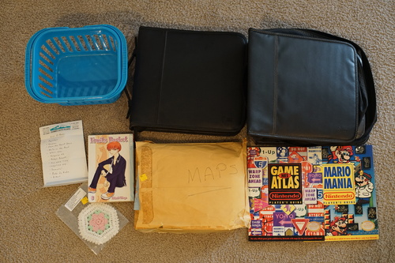

I had some big plans to make a cool art to post for my 50k (webcrawler) views and my 100th post came just in time! sorry... i didnt come up with anything cool to show you all. maybe at 100k...
Mostly ryan's this time! I only bought 2 things.
It's for my yard and plant tools that I've been leaving on the porch in a pile. Ryan bought it for me.
We have a lot of dave matthews band CDs now. what do we do with them...
i thought it was just a bad poem when i picked it up
it's mine!
my find! made by 2 women who live(d) in Spokane. I googled the names on the package and one of them died last year at the age of 82. thank you, grandma...
i found a large intuos 3 while i was there and i looked everywhere for the pen but no luck. i left it for the next person willing to find a pen for it. my (rarely used now) tablet is a bamboo fun medium in blue (CTE-650) that i got brand new for my birthday in probably 2008. it was pretty much the first time a tablet was released that i could even pretend to own. I loved it so very much and got a ton of use out of it! here's the first thing i drew with it:

my bestie gave me my first and only sonic game for my birthday the same year, which is sonic chronicles dark brotherhood, so he was a hot topic at the time we were testing out my new tablet
eventually (like in 2016) the mouse broke and i also stopped drawing for a long time. sometimes i think about getting a new tablet but i'm not devoted enough right now for it to be worth it. wacom has come up with some really cool stuff in the last few years though! i'm impressed at how far we've come
Months ago, I entered a volksusa lottery for DSD Mai. I posted about it in the thread and I didn't end up winning but no one in the thread posted saying they won. I was really confused why there wasn't a single winner at all! I posted asking if anyone had won, and sure enough, multiple people came out saying they had, but didn't want to make anyone feel bad about not winning, so they didn't post.
i couldn't believe anyone was seriously worried about that! is it really that upsetting to find out someone else won the doll you didnt win? who would want to live in a world where they would never see the doll they wanted again? surely no one is that bitter and upset right??
wrong. today I learned people really are so miserable and will guilt people over their wins. lots of happy people were posting that they had max or reggie! it was great to see so many english speaking winners! some people even won doubles (which will surely make it into the US aftermarket)! Some people even won a michele for god knows what reason, but i'm happy for them too!
one post really got me though. a few others chided the choice of a lottery system, but nothing was quite this bad.
"I didn't win anything through VolksUSA, which is pretty rude.
Been a VolksUSA customer since 2006. At times like these, it really feels pointless to be a loyal, longtime customer to VolkUSA."
i am so disgusted by this Most Embarrassing Behavior and i no longer wonder why the DSD winners last year were afraid to post about their wins. the unbelievable entitlement! the wish to rig a random number generator! what a truly awful attitude to have.
these kinds of feelings should be kept in your diary, not out in the open to guilt the happy winners. tell it to your neighbor who doesnt care. tell it to your dog. or you can tell your mom, who also doesnt care. let these winners have celebrate for once. maybe next time, they'll celebrate your win with you!
i will say i'm not a fan of the lottery, but I am even less of a fan of clickwar and preorder. clickwar is a miracle to be fast enough for someone outside of japan and preorder was by far my most painful doll wait that i will never repeat. if you have a better solution, email volks and tell them right now.
and a big congratulations to pompon for the win of two beautiful gay dads! I'm so glad my sacrifice of my own luck and both our prayers paid off!! surely i will never win a lottery now after this win! that's alright though. I already lucked out big time on my darling hina-chama.